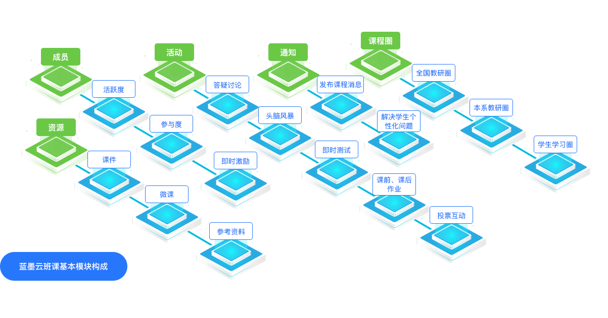

行动学习
云教学
“以学生为中心”的行动学习
作为“互联网+”、大会计时代的会计专业学生，已不适宜采用教师单向的、直线的“一言堂”讲授，更需要通过自身的参与和体验来获取更多的信息资源。教师的角色应该从知识的讲授者、传播者变为学生学习的引导者。行动学习（Action Learning）是一种着重训练学生思维习惯和行为控制的教学模式，倡导学生自主学习，引导学生提出问题、分析问题以及解决问题，使学生经历了从传统课堂向“高效”课堂的转变，以培养学生终身学习的能力为目标。本成果应用的行动学习工具包括：团队共创、世界咖啡、六顶思考帽、欣赏式探询、复盘以及ORID+mindmap等，同时实现了与云教学平台的结合，不仅实现了学生对教学内容的深入理解，而且打造了不一样的课堂。
行动学习风采
团队共创
世界咖啡
六顶思考帽
欣赏式探询
复盘
ORID+Mindmap
云教学平台—蓝墨云班课APP和智慧教辅启课程的应用
一、蓝墨云班课的应用
2014年11月，中国第一款课堂教学互动手机APP软件--由北京智启蓝墨信息技术公司开发的蓝墨云班课诞生，标志着中国的课堂教学改革从互联网时代跨入到了移动互联网时代，是中国课堂教学改革的一个分水岭。2015年会计学院部分教师开始使用这款APP进行课堂教学，基于此平台，打破了传统认知：上课不能看手机。这款APP可以实现学生签到、课堂讨论、头脑风暴、资源分享、作业布置与评价、测试等功能，丰富了学生的学习资源，调动了学生参与课堂教学活动的积极性，同时通过数据导出功能，实现了学生学情的及时反馈，对教学效果的改善起到了良好的推动作用。通过蓝墨云班课的使用，初步实现了学生的移动学习。

2014年11月，中国第一款课堂教学互动手机APP软件--由北京智启蓝墨信息技术公司开发的蓝墨云班课诞生，标志着中国的课堂教学改革从互联网时代跨入到了移动互联网时代，是中国课堂教学改革的一个分水岭。2015年会计学院部分教师开始使用这款APP进行课堂教学，基于此平台，打破了传统认知：上课不能看手机。这款APP可以实现学生签到、课堂讨论、头脑风暴、资源分享、作业布置与评价、测试等功能，丰富了学生的学习资源，调动了学生参与课堂教学活动的积极性，同时通过数据导出功能，实现了学生学情的及时反馈，对教学效果的改善起到了良好的推动作用。通过蓝墨云班课的使用，初步实现了学生的移动学习。
蓝墨云班课包括七个模块，具体使用介绍如下：
（一）资源模块：可以通过PC端和网络链接上传课程资料，如课程的课件、讲义、视频资料，链接有关由教师经过遴选的新闻资讯，可以引导学生自主学习，同时拓宽学生的知识面和视野。此模块支持为每个教学资源设置经验值分数，学生学习即可获得相应经验值分数；支持教师查看每个资源的学生学习的情况，包括未查看资源的学生列表、已查看资源的学生列表，对于视频类资源还可以查看到学生视频学习的百分比进度。
（一）资源模块：可以通过PC端和网络链接上传课程资料，如课程的课件、讲义、视频资料，链接有关由教师经过遴选的新闻资讯，可以引导学生自主学习，同时拓宽学生的知识面和视野。此模块支持为每个教学资源设置经验值分数，学生学习即可获得相应经验值分数；支持教师查看每个资源的学生学习的情况，包括未查看资源的学生列表、已查看资源的学生列表，对于视频类资源还可以查看到学生视频学习的百分比进度。
（二）活动模块：这部分包括答疑讨论、头脑风暴、测试、作业/小组任务和投票/问卷：
1.答疑讨论：根据教学需要，教师将预习需要的问题，重要的知识点的理解，课堂上学生存在的学习问题，在此模块中组织学生讨论，以此实现了学生与教师，学生与学生随时随地的互动，将课堂延伸至教室以外。
2.头脑风暴：采用这种头脑风暴，学生可以对讨论的问题自由发言，但是基于课堂时间有限，让每位同学发言几乎是无法实现的，但是在蓝墨云班课的这个模块中，各位同学可以针对教师提出的学习问题，首先在各自的手机上输入自己的观点，同时自由“发表意见”，不受任何约束，此时每个人只能看到自己的观点，当所有同学“发言”完毕，教师通过结束此项活动，各位同学就可以看到所有人的观点，这样既实现了每一位同学参与其中，而且实现了观点碰撞，认知的爆发式增长，一方面降低了同学的学习成本，另一方面实现了知识的快速扩散，形成了对相关问题的全面认知。
3.测试：传统的教学模式中考试多数只能采用纸质，并在教室中进行，从时间角度，只能定期考核学生学习，从了解学生的知识掌握情况而言，不能及时了解学生学习中存在的问题，蓝墨云班课的测试模块可以让教师随时进行测试，通过全班学生的数据，可以了解整体的掌握情况，同时通过每个学生的分析，可以知道每位学生的薄弱环节，有针对性地可以进行辅导，进而可以全面提高学生的学习成绩。学生完成测试后，平台自动反馈测试的结果分析，包括班级测试的整体排名、整体分析、每个学生测试结果、单体测试结果分析等；支持教师自建题库，在平台Web端通过Excel模板导入题库。
1.答疑讨论：根据教学需要，教师将预习需要的问题，重要的知识点的理解，课堂上学生存在的学习问题，在此模块中组织学生讨论，以此实现了学生与教师，学生与学生随时随地的互动，将课堂延伸至教室以外。
2.头脑风暴：采用这种头脑风暴，学生可以对讨论的问题自由发言，但是基于课堂时间有限，让每位同学发言几乎是无法实现的，但是在蓝墨云班课的这个模块中，各位同学可以针对教师提出的学习问题，首先在各自的手机上输入自己的观点，同时自由“发表意见”，不受任何约束，此时每个人只能看到自己的观点，当所有同学“发言”完毕，教师通过结束此项活动，各位同学就可以看到所有人的观点，这样既实现了每一位同学参与其中，而且实现了观点碰撞，认知的爆发式增长，一方面降低了同学的学习成本，另一方面实现了知识的快速扩散，形成了对相关问题的全面认知。
3.测试：传统的教学模式中考试多数只能采用纸质，并在教室中进行，从时间角度，只能定期考核学生学习，从了解学生的知识掌握情况而言，不能及时了解学生学习中存在的问题，蓝墨云班课的测试模块可以让教师随时进行测试，通过全班学生的数据，可以了解整体的掌握情况，同时通过每个学生的分析，可以知道每位学生的薄弱环节，有针对性地可以进行辅导，进而可以全面提高学生的学习成绩。学生完成测试后，平台自动反馈测试的结果分析，包括班级测试的整体排名、整体分析、每个学生测试结果、单体测试结果分析等；支持教师自建题库，在平台Web端通过Excel模板导入题库。
4.作业/小组任务：教师可以在此模块针对学生个人或小组布置作业或任务，同时可以指定评价方式，评价方式包括教师评价，指定学生或助教评价以及学生互评，若选择学生互评，可以采取匿名互评，充分调动的参与度，同时教师可以设置相应的评分点引导学生评价，学生可以将作业在教师设定的完成时间之前通过手机或PC端进行上传，进而可以进入评价阶段。在这个模块，有非常重要的小组划分功能。目前很多教师为了培养学生的综合能力，鼓励学生采用团队合作的方式完成学习任务，因此在此模块，可以采用事先划分好的小组或随机划分的小组，将其小组完成的作业上传，进而由教师或其他小组进行评价。
5.投票/问卷：此模块可以用于教学中教学互动的一个工具，了解学生对某个问题的认知，或对某项教学活动的评价，结果相对比较客观，因为是匿名的。此模块支持教师创建投票或问卷活动并即时发布，学生可以即时回答，教师即时得到投票问卷结果。
6.课堂表现：在此模块中具体包括：举手、抢答、选人和小组评价功能。具体来讲：
当教师点击发起举手，学生可以自愿参与，教师可以在手机上看到举手的同学，点击其头像，即可让这位同学参与教学活动，同时可根据其表现给予经验值的奖励。当教师点击发起抢答，并决定抢答人数，学生在其手机端点击，系统会自动选择最先抢答的学生。教师可以指定某位同学回答问题或参与活动。
5.投票/问卷：此模块可以用于教学中教学互动的一个工具，了解学生对某个问题的认知，或对某项教学活动的评价，结果相对比较客观，因为是匿名的。此模块支持教师创建投票或问卷活动并即时发布，学生可以即时回答，教师即时得到投票问卷结果。
6.课堂表现：在此模块中具体包括：举手、抢答、选人和小组评价功能。具体来讲：
当教师点击发起举手，学生可以自愿参与，教师可以在手机上看到举手的同学，点击其头像，即可让这位同学参与教学活动，同时可根据其表现给予经验值的奖励。当教师点击发起抢答，并决定抢答人数，学生在其手机端点击，系统会自动选择最先抢答的学生。教师可以指定某位同学回答问题或参与活动。
（三）成员模块：该模块呈现了班课的学生名单以及学生的经验值高低。支持教师在手机端、Web版上监测到全班学生的经验值得分排序和名次，对前三名以不同颜色区分激励，支持教师可以查看每位学生的学习过程的可视化学习行为分析统计报告，报告内容包括总经验值得分分析饼状图、活动参加百分比、资源查看百分比、出勤百分比、讨论答疑次数、获赞次数、课堂表现得分、视频学习时长；支持教师查看学生的经验值积分明细，按时间线列表的详尽个体学生学习行为记录报告（包括时间、事件和得分）。
（四）消息模块：通过此模块，允许教师方便、即时地向学生发送通知，学生手机端能够在手机通知栏即时收到通知消息，可以查阅哪些学生看了通知，那些没有看通知；允许老师和学生私聊；未读消息在手机端会有红色的数字提示功能；开展教学活动（如推送资源、开展教学互动等）时即时地让学生接收到任务的消息提醒。
（五）课程圈模块：此模块支持课程圈推荐、课程圈搜索、课程圈关注功能，关注课程圈后，可以与全国同一门课程的老师或学生分享教学资源和教学活动，建立教学资源的交流共享模式。可以建立私密教研圈，快速创建校内的教研小组，进行课程建设、资源分享、活动分享等活动。可以在课程圈内共建课程，学生也可以参与，上传分享教学资源和活动，提供学习体验和课程改进建议，教师可以给学生激励打赏。
（六）课程包模块：具有“课程包”功能模块，支持教师将自己班课的资源、活动、题库整体打包成“课程包”，在平台审核后，允许教师将“课程包”授权给其他教师，其他教师在获得授权的“课程包”后能够将包中的资源、活动引入到自己的班课中应用。
（七）人工智能模块：2017年10月蓝墨云班课3.0版上线新功能---AIMOSO，基于课堂即时互动反馈采集的行为大数据，采用用户画像技术，为每一位学习者和教师进行画像，并依据用户画像提出针对每一位教师和学生的个性化成长建议。蓝墨云班课人工智能AIMOSO——小蓝和小墨，分别代表着人工智能助学与人工智能助教。小蓝是针对学生的人工智能，会针对学生出现的参与活动较少进行及时的提醒；小墨是针对教师的人工智能，会提示教师哪些学生浏览学习资源和参与活动较少。
（四）消息模块：通过此模块，允许教师方便、即时地向学生发送通知，学生手机端能够在手机通知栏即时收到通知消息，可以查阅哪些学生看了通知，那些没有看通知；允许老师和学生私聊；未读消息在手机端会有红色的数字提示功能；开展教学活动（如推送资源、开展教学互动等）时即时地让学生接收到任务的消息提醒。
（五）课程圈模块：此模块支持课程圈推荐、课程圈搜索、课程圈关注功能，关注课程圈后，可以与全国同一门课程的老师或学生分享教学资源和教学活动，建立教学资源的交流共享模式。可以建立私密教研圈，快速创建校内的教研小组，进行课程建设、资源分享、活动分享等活动。可以在课程圈内共建课程，学生也可以参与，上传分享教学资源和活动，提供学习体验和课程改进建议，教师可以给学生激励打赏。
（六）课程包模块：具有“课程包”功能模块，支持教师将自己班课的资源、活动、题库整体打包成“课程包”，在平台审核后，允许教师将“课程包”授权给其他教师，其他教师在获得授权的“课程包”后能够将包中的资源、活动引入到自己的班课中应用。
（七）人工智能模块：2017年10月蓝墨云班课3.0版上线新功能---AIMOSO，基于课堂即时互动反馈采集的行为大数据，采用用户画像技术，为每一位学习者和教师进行画像，并依据用户画像提出针对每一位教师和学生的个性化成长建议。蓝墨云班课人工智能AIMOSO——小蓝和小墨，分别代表着人工智能助学与人工智能助教。小蓝是针对学生的人工智能，会针对学生出现的参与活动较少进行及时的提醒；小墨是针对教师的人工智能，会提示教师哪些学生浏览学习资源和参与活动较少。
总而言之，教师使用蓝墨云班课创建一个班课，学生通过班课邀请码加入班课，所有学生的智能手机立即连接成一个可以即时反馈的教学互动网络。利用蓝墨云班课，教师可以发送课程通知，推送课件，微视频、图片、音频、文档等资源到学生的移动设备上，并提醒学生学习，反馈学生的学习记录，在课堂上或课堂外时间里，教师可以随时开展投票、问卷、头脑风暴、答疑、讨论等教学活动，从而提升与学生的沟通和互动效率。
会计专业智慧教辅平台“启课程”的应用
启课程是高校智慧教辅开发的引领者，聚焦资源与资源管理、大数据分析与教学管理的深度融合，推动智能教育平台在高校的系统化、常态化应用。目前，启课程研发的会计专业智慧教辅已经成功使用于中央财经大学、广东财经大学、等院校的会计专业，是国内领先的混合式教学内容服务提供商。我院于2018年开始将此平台应用于《管理会计》课程中，并计划于2019年在会计专业的核心课程中全面推广。此平台的特点如下：
（一）新的课程内容：以会计领域的理论界和实务界的专家作为智囊团支持教学内容的持续更新，按照学科知识演变的路径和逐层深入的认知体系进行课程框架的设计，按照问题导向的逻辑层层深入的构建课件核心资源，在框架主线中融合知识背景的链接和实务发展的案例，将核心课件、知识链接、互动话题、案例分析、作业练习有机融合在一起，培养学生解决复杂问题的综合能力。
启课程是高校智慧教辅开发的引领者，聚焦资源与资源管理、大数据分析与教学管理的深度融合，推动智能教育平台在高校的系统化、常态化应用。目前，启课程研发的会计专业智慧教辅已经成功使用于中央财经大学、广东财经大学、等院校的会计专业，是国内领先的混合式教学内容服务提供商。我院于2018年开始将此平台应用于《管理会计》课程中，并计划于2019年在会计专业的核心课程中全面推广。此平台的特点如下：
（一）新的课程内容：以会计领域的理论界和实务界的专家作为智囊团支持教学内容的持续更新，按照学科知识演变的路径和逐层深入的认知体系进行课程框架的设计，按照问题导向的逻辑层层深入的构建课件核心资源，在框架主线中融合知识背景的链接和实务发展的案例，将核心课件、知识链接、互动话题、案例分析、作业练习有机融合在一起，培养学生解决复杂问题的综合能力。
（二）新的教学形式：线上线下混合式教学
利用启课程平台，可以展开问题导向式教学，通过问题导向—分析问题—实践应用—反思促进的学习循环，提升最终的学习效果，具体设计如下：
1、课前利用线上的知识动画视频以及互动话题活动，引导学生的讨论和思考，如果具体的教学任务与其他教学任务产生链接，启课程会通过相关知识链接的形式进行旧知的复习，同时产生新知与旧知的链接。
2、课上通过案例分析，习题演练，进一步应用新知，加深巩固。同时，教师可根据学生的课堂表现判断学习效果，设计下一部教学活动。
3、课后：教师可通过学情反馈及时了解学生动态，同时每堂课后学生都可以了解平台对自己的综合评价，从而产生“快刺激，小成就”的体验，使得学生像游戏闯关一样由浅入深建立学习的自信与兴趣。
利用启课程平台，可以展开问题导向式教学，通过问题导向—分析问题—实践应用—反思促进的学习循环，提升最终的学习效果，具体设计如下：
1、课前利用线上的知识动画视频以及互动话题活动，引导学生的讨论和思考，如果具体的教学任务与其他教学任务产生链接，启课程会通过相关知识链接的形式进行旧知的复习，同时产生新知与旧知的链接。
2、课上通过案例分析，习题演练，进一步应用新知，加深巩固。同时，教师可根据学生的课堂表现判断学习效果，设计下一部教学活动。
3、课后：教师可通过学情反馈及时了解学生动态，同时每堂课后学生都可以了解平台对自己的综合评价，从而产生“快刺激，小成就”的体验，使得学生像游戏闯关一样由浅入深建立学习的自信与兴趣。
（三）新理念的教学——行动学习与信息技术平台的“无缝对接”
自2015年会计专业任课教师将行动学习的工具：团队共创、开放空间、世界咖啡、群策群力等与信息技术平台进行了结合，有力地推动了学生自主学习，改变了传统课堂学习模式，让教学逐步实现了“以学生为中心”，形成了一种螺旋式学习结构，将课堂的时间更多的交给了学生解决问题，践行知行合一，挖掘专业课程的创新能力发展价值，以问题为导向，培养了学生的批判性思维和创新性思维，进而提高了学生发现问题、分析问题和解决问题的能力。
自2015年会计专业任课教师将行动学习的工具：团队共创、开放空间、世界咖啡、群策群力等与信息技术平台进行了结合，有力地推动了学生自主学习，改变了传统课堂学习模式，让教学逐步实现了“以学生为中心”，形成了一种螺旋式学习结构，将课堂的时间更多的交给了学生解决问题，践行知行合一，挖掘专业课程的创新能力发展价值，以问题为导向，培养了学生的批判性思维和创新性思维，进而提高了学生发现问题、分析问题和解决问题的能力。